Goodness of fit
goodness-of-fit.Rmd1. Introduction
The ospsuite.plots library provides functions to compare
predicted and observed data and resulting residuals:
-
plotPredVsObs()(see section 2): plot predicted values versus corresponding observed values. -
plotResVsCov()(see section 3): plot residuals as points versus a covariate (e.g., Time, observed values, or Age). -
plotRatioVsCov()(see section 4): plot ratios as points versus a covariate (e.g., Time, observed values, or Age). -
plotQQ()(see section 5): Quantile-Quantile plot.
In these functions, the aesthetics observed and
predicted can be used. These aesthetics are also available
in other functions of the ospsuite.plots library:
-
plotBoxwhisker()(see section 6.1): aggregate residuals and display aggregated values versus covariate. -
plotHistogram()(see section 6.2): generates histograms of residuals.
The functions plotPredVsObs(),
plotResVsCov(), and plotRatioVsCov() are
mainly wrappers around the function plotXVsY(), using
different defaults for input variables. So, use ?plotXvsY
to get more details.
For DDI comparison, the functions plotPredVsObs() and
plotResVsObs() can be overlaid with lines indicating the
limits of the Guest Criteria (https://dmd.aspetjournals.org/content/39/2/170) (see
section 7).
1.1 Setup
This vignette uses the ospsuite.plots and tidyr libraries. We will use the default settings of ospsuite.plots (see vignette(“ospsuite.plots”, package = “ospsuite.plots”)).
options(rmarkdown.html_vignette.check_title = FALSE)
# Set watermark option required for ospsuite.plots functionality
options(ospsuite.plots.watermark_enabled = TRUE)
library(ospsuite.plots)
library(tidyr)
oldDefaults <- setDefaults()1.2 Example Data
This vignette uses two randomly generated example datasets provided by the package.
1.2.1 Dataset with Predicted and Observed Data
data <- exampleDataCovariates |>
dplyr::filter(SetID == "DataSet2") |>
dplyr::select(c("ID", "Age", "Obs", "gsd", "Pred", "Sex"))
knitr::kable(head(data), digits = 3, caption = "First rows of example data.")| ID | Age | Obs | gsd | Pred | Sex |
|---|---|---|---|---|---|
| 1 | 44 | 28.808 | 1.009 | 32.535 | Female |
| 2 | 23 | 77.476 | 0.992 | 76.418 | Male |
| 3 | 26 | 35.861 | 1.028 | 34.282 | Female |
| 4 | 20 | 62.711 | 1.072 | 55.015 | Male |
| 5 | 21 | 30.475 | 1.045 | 29.751 | Female |
| 6 | 48 | 74.238 | 0.989 | 67.357 | Male |
metaData <- attr(exampleDataCovariates, "metaData")
metaData <- metaData[intersect(names(data), names(metaData))]
knitr::kable(metaData2DataFrame(metaData), digits = 2, caption = "List of meta data")| Age | Obs | Pred | |
|---|---|---|---|
| dimension | Age | Clearance | Clearance |
| unit | yrs | dL/h/kg | dL/h/kg |
1.2.2 Dataset for Examples with DDI Prediction
dDIdata <- exampleDataCovariates |>
dplyr::filter(SetID == "DataSet3") |>
dplyr::select(c("ID", "Obs", "Pred")) |>
dplyr::mutate(Study = paste("Study", ID))
dDIdata$Study <- factor(dDIdata$Study, levels = unique(dDIdata$Study))
knitr::kable(head(dDIdata), digits = 2, caption = "First rows of dataset used for DDI example.")| ID | Obs | Pred | Study |
|---|---|---|---|
| 1 | 0.53 | 0.83 | Study 1 |
| 2 | 1.20 | 0.90 | Study 2 |
| 3 | 0.43 | 0.50 | Study 3 |
| 4 | 4.93 | 3.39 | Study 4 |
| 5 | 1.39 | 1.10 | Study 5 |
| 6 | 0.44 | 0.39 | Study 6 |
dDImetaData <- list(
Obs = list(dimension = "DDI AUC Ratio", unit = ""),
Pred = list(dimension = "DDI AUC Ratio", unit = "")
)
knitr::kable(metaData2DataFrame(dDImetaData), digits = 2, caption = "List of meta data")| Obs | Pred | |
|---|---|---|
| dimension | DDI AUC Ratio | DDI AUC Ratio |
| unit |
1.2.3 Dataset for Ratio Comparison
pkRatioData <- exampleDataCovariates |>
dplyr::filter(SetID == "DataSet1") |>
dplyr::select(!c("SetID")) |>
dplyr::mutate(gsd = 1.1)
pkRatiometaData <- attr(exampleDataCovariates, "metaData")
pkRatiometaData <- pkRatiometaData[intersect(names(pkRatioData), names(pkRatiometaData))]
knitr::kable(head(pkRatioData), digits = 3)| ID | Age | Obs | Pred | Ratio | AgeBin | Sex | Country | SD | gsd |
|---|---|---|---|---|---|---|---|---|---|
| 1 | 48 | 4.00 | 2.90 | 0.725 | Adults | Male | Canada | 0.693 | 1.1 |
| 2 | 36 | 4.40 | 5.75 | 1.307 | Adults | Male | Canada | 0.188 | 1.1 |
| 3 | 52 | 2.80 | 2.70 | 0.964 | Adults | Male | Canada | 0.984 | 1.1 |
| 4 | 47 | 3.75 | 3.05 | 0.813 | Adults | Male | Canada | 0.591 | 1.1 |
| 5 | 0 | 1.95 | 5.25 | 2.692 | Peds | Male | Canada | 0.443 | 1.1 |
| 6 | 48 | 2.45 | 5.30 | 2.163 | Adults | Male | Canada | 0.072 | 1.1 |
knitr::kable(metaData2DataFrame(pkRatiometaData), digits = 3)| Age | Obs | Pred | Ratio | SD | |
|---|---|---|---|---|---|
| dimension | Age | Clearance | Clearance | Ratio | Clearance |
| unit | yrs | dL/h/kg | dL/h/kg | dL/h/kg |
2. Predicted vs Observed (plotPredVsObs())
2.1 Basic Examples
2.1.1 Default Settings
Basic example using default settings. Predicted and observed data are
mapped with predicted and observed. The
aesthetic groupby can be used to group observations.
plotPredVsObs(
data = data,
mapping = aes(
observed = Obs,
predicted = Pred,
groupby = Sex
),
metaData = metaData
)2.1.2 Basic Example: Linear Scale
The scale for the x and y axes is set to linear. It is not intended
to use different scales for the x and y axes. Therefore, only one
variable xyScale exists for both axes.
Predicted and observed data are mapped with x and
y.
plotPredVsObs(
data = data,
mapping = aes(
x = Obs,
y = Pred,
groupby = Sex
),
metaData = metaData,
xyScale = "linear"
)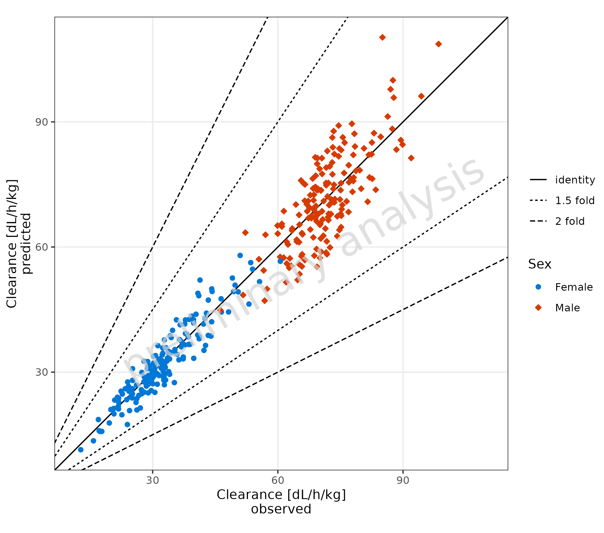
2.1.3 Error Bars for Observed Data
Error bars for the observed data are plotted. In the example, this is
done by mapping error_relative. Error bars could also be
produced by mapping error to a column with an additive
error or mapping xmin and xmax explicitly.
plotPredVsObs(
data = data,
mapping = aes(
x = Obs,
y = Pred,
error_relative = gsd,
groupby = Sex
),
metaData = metaData
)2.1.4 Error Bars for Observed and Predicted Data
To plot the prediction error, ymin and ymax
must also be mapped explicitly.
plotPredVsObs(
data = data,
mapping = aes(
x = Obs,
y = Pred,
error_relative = gsd,
ymin = Pred * 0.9,
ymax = Pred * 1.1,
groupby = Sex
),
metaData = metaData
)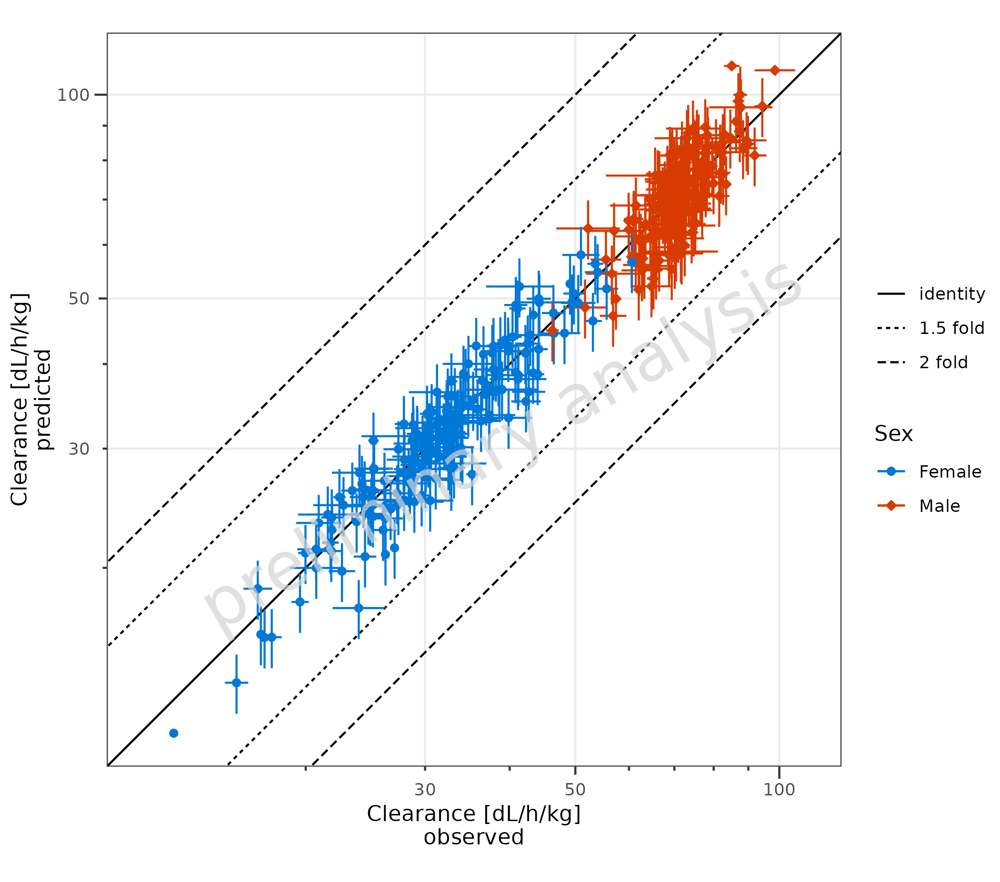
2.1.5 Example with LLOQ
Below, a dataset is created where the LLOQ is set to the 0.1 quantile
of the observed data. All values below are set to LLOQ/2. By mapping
lloq, these data are displayed with a lighter alpha, and a
horizontal line for the LLOQ is added.
lloqData <- signif(quantile(data$Obs, probs = 0.1), 1)
dataLLOQ <- data |>
dplyr::mutate(lloq = lloqData) |>
dplyr::mutate(Obs = ifelse(Obs <= lloq, lloq / 2, Obs))
plotPredVsObs(
data = dataLLOQ,
mapping = aes(
x = Obs,
y = Pred,
lloq = lloq,
groupby = Sex
),
metaData = metaData
)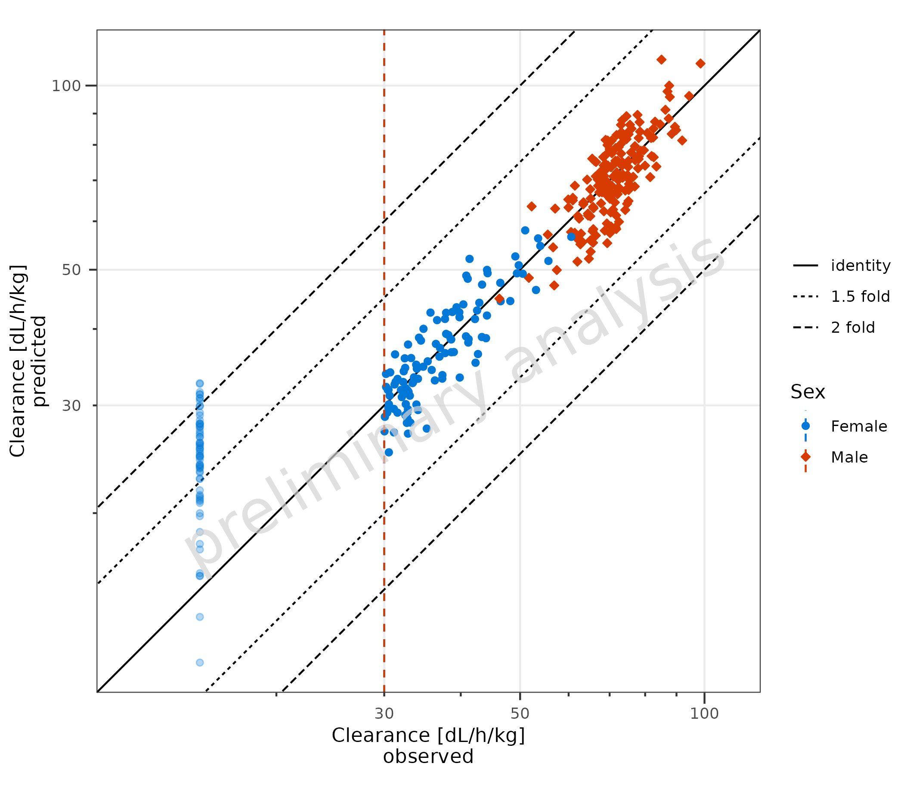
2.2 Adjust Comparison Lines
2.2.1 Adjust Fold Distance
plotPredVsObs() adds lines to indicate fold distances.
The lines are defined by the variable comparisonLineVector,
which is a named list with default values
list(identity = 1, '1.5 fold' = c(1.5, 1/1.5), '2 fold' = c(2, 1/2)).
A fold distance list can be generated by the helper function
?getFoldDistanceList().
Below, the 1.2 and 1.5 distances are displayed:
plotPredVsObs(
data = data,
mapping = aes(
x = Obs,
y = Pred,
groupby = Sex
),
metaData = metaData,
comparisonLineVector = getFoldDistanceList(c(1.2, 1.5))
)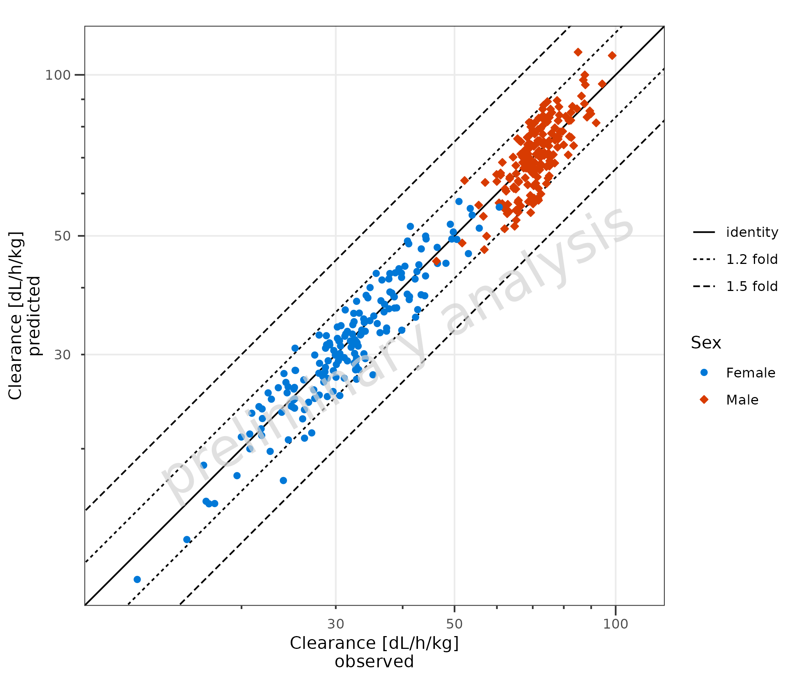
2.2.2 Adjust Display of Lines
The names of the list are displayed in the legend.
If the list is unnamed, all lines are displayed with the same line
type, and they are not included in the legend. The line type used is
settable by the variable geomComparisonLineAttributes.
If the variable comparisonLineVector is NULL, no lines
will be displayed.
plotPredVsObs(
data = data,
mapping = aes(
x = Obs,
y = Pred,
groupby = Sex
),
metaData = metaData,
comparisonLineVector = unname(getFoldDistanceList(c(1.2, 1.5))),
geomComparisonLineAttributes = list(linetype = "dotted")
)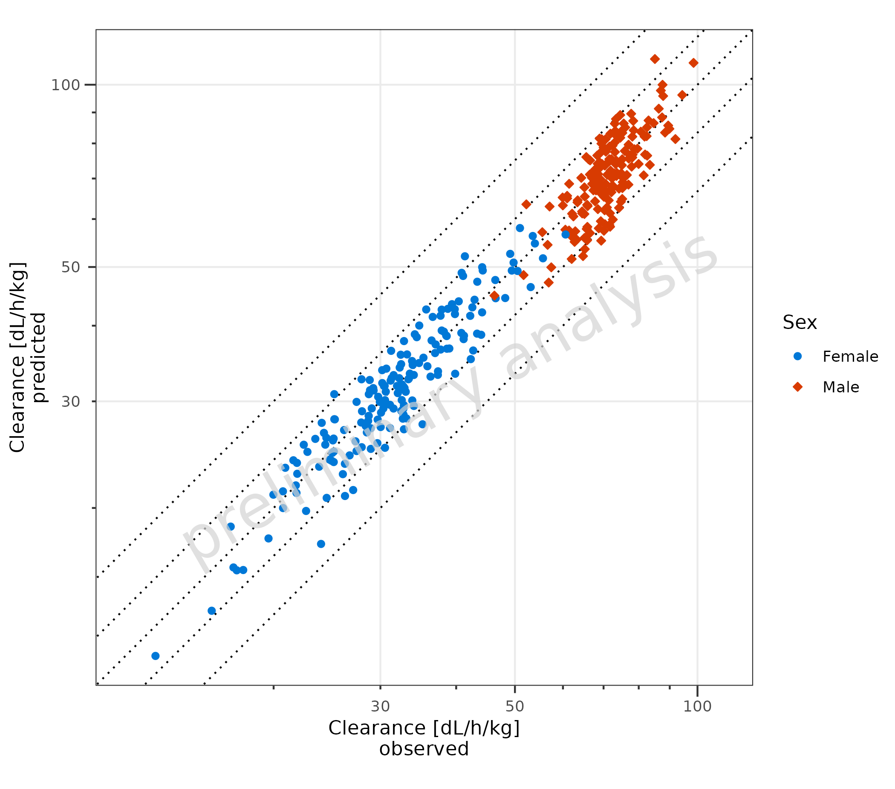
2.3 Adding a Regression Line
To add a regression line, set the input variable
addRegression to TRUE (A). For regression
lines, the package ggpubr has a function
stat_regline_equation to add statistics of the regression
as labels (B). To use other functions, e.g., local polynomial
regression, use ggplot2::geom_smooth directly (C).
# A
plotObject <- plotPredVsObs(
data = data,
mapping = aes(
x = Obs,
y = Pred,
groupby = Sex
),
metaData = metaData,
addRegression = TRUE
) +
labs(title = "Regression Line", tag = "A")
plot(plotObject)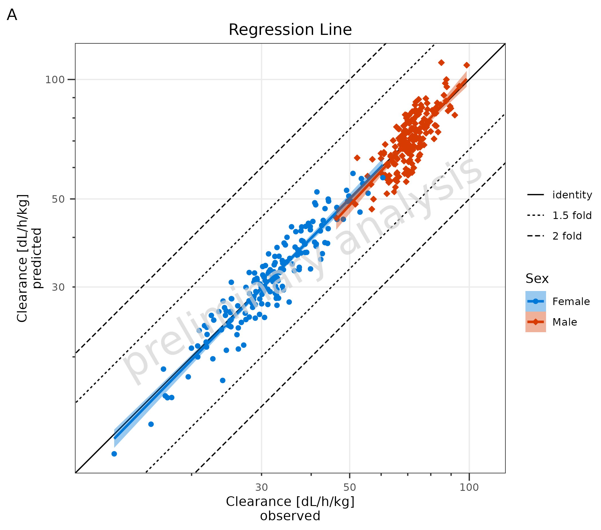
# B
plotObject + ggpubr::stat_regline_equation(aes(label = after_stat(rr.label))) + labs(title = "With RR as Label", tag = "B")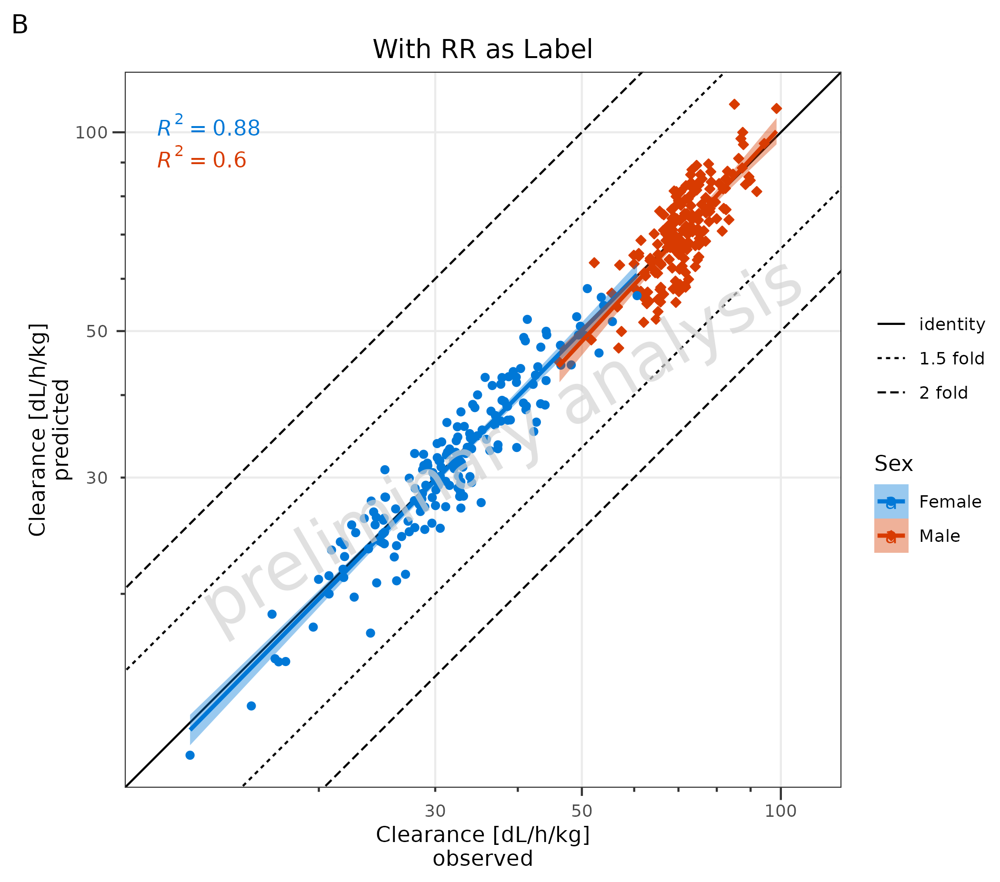
# C Local Polynomial Regression Fitting
plotPredVsObs(
data = data,
mapping = aes(
x = Obs,
y = Pred,
groupby = Sex
),
metaData = metaData,
addRegression = FALSE
) +
geom_smooth(method = "loess", formula = "y ~ x", na.rm = TRUE) +
labs(title = "Local Polynomial Regression Fitting", tag = "C")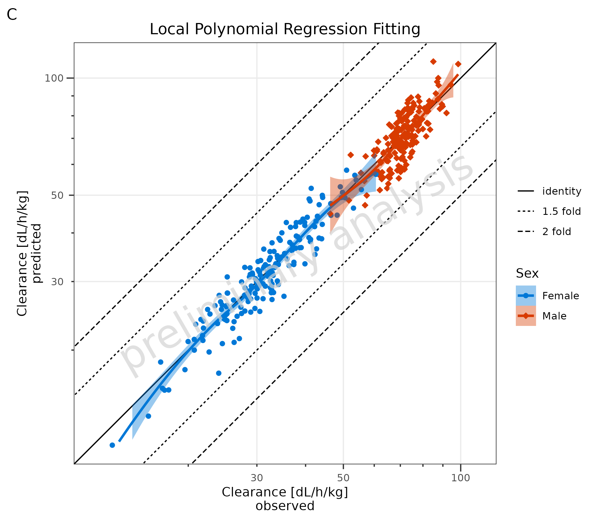
2.4 Add Guest Criteria Lines
To compare DDI ratios, set the variable addGuestLimits
to TRUE and set the variable deltaGuest:
plotPredVsObs(
data = dDIdata,
mapping = aes(
x = Obs,
y = Pred,
groupby = Study
),
metaData = dDImetaData,
addGuestLimits = TRUE,
comparisonLineVector = list(identity = 1),
deltaGuest = 1
)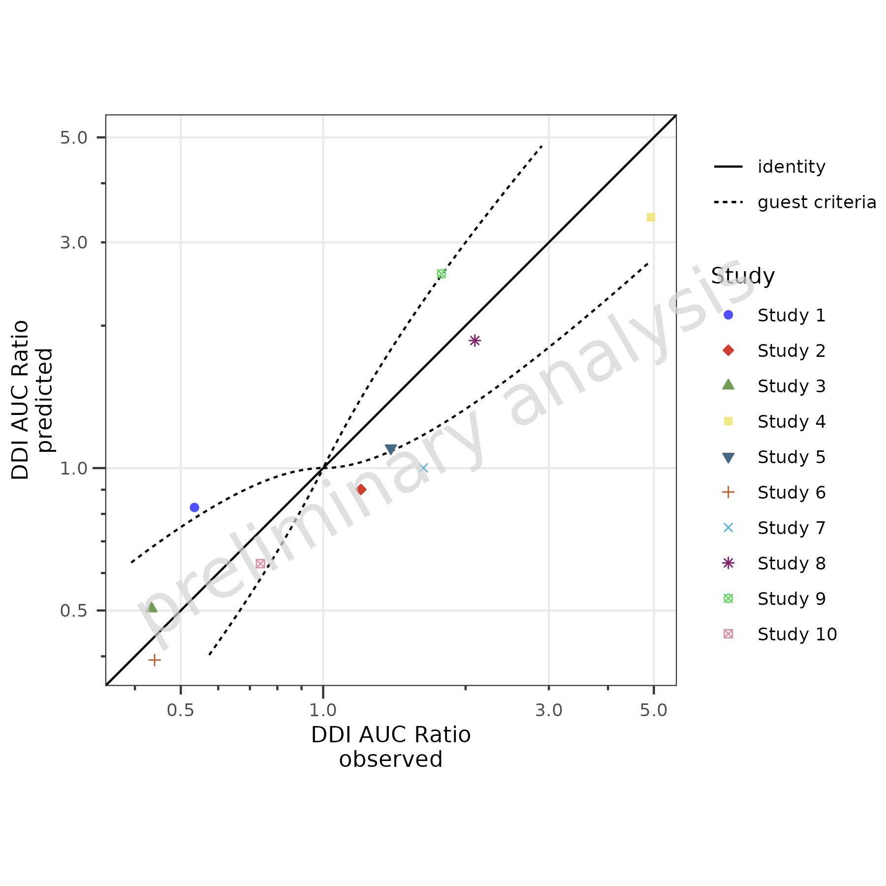
2.5 Use Non-Square Format
By default, plotPredVsObs() produces a square plot with
an aspect ratio of 1 and the same limits for the x and y axes. In the
example below, the Predicted values are set to 1/2 of the original
values. A square plot does not make sense anymore; therefore, the
variable asSquarePlot is set to FALSE.
dataNonSquare <- data |>
dplyr::mutate(Pred = Pred / 2)
plotPredVsObs(
data = dataNonSquare,
mapping = aes(
x = Obs,
y = Pred,
groupby = Sex
),
metaData = metaData,
asSquarePlot = FALSE
)
3. Residuals vs Covariate (plotResVsCov())
3.1 Basic Examples
The function plotResVsCov() calculates the residuals
using the aesthetics observed and
predicted.
3.1.1 Default Settings
The default value for the variable residualScale is
“log”. Residuals will then be calculated by
log(predicted) - log(observed). A horizontal comparison
line with the value 0 is displayed. The aesthetic groupby
can be used to group observations.
plotResVsCov(
data = data,
mapping = aes(
x = Age,
predicted = Pred,
observed = Obs,
groupby = Sex
)
)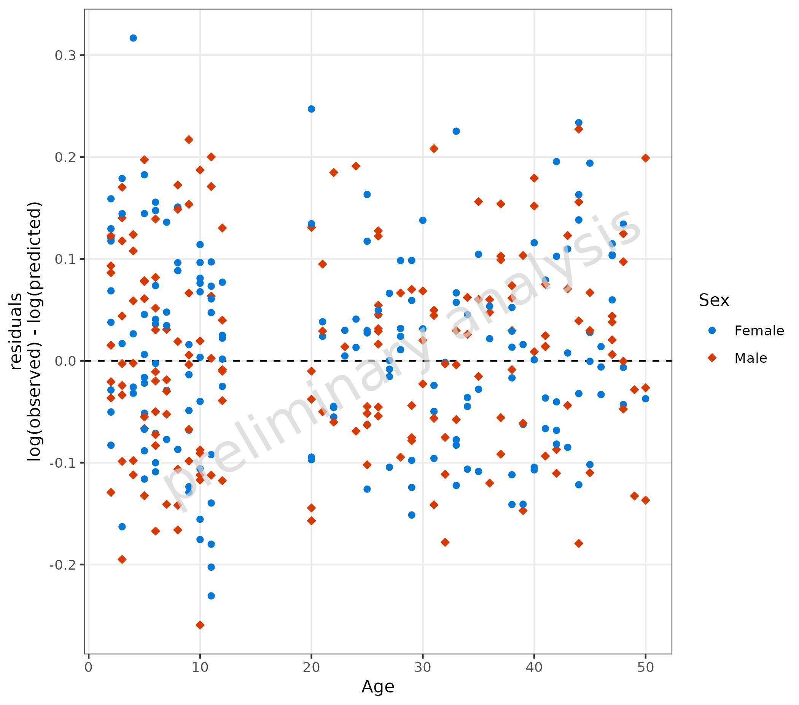
3.1.2 Linear Scale for Residuals
If the variable residualScale is set to “linear”,
residuals will be calculated by #$# predicted
- observed #$#.
Below, the line type of the comparison line is set to ‘solid’.
plotResVsCov(
data = data,
mapping = aes(
x = Age,
predicted = Pred,
observed = Obs,
groupby = Sex
),
residualScale = "linear",
geomComparisonLineAttributes = list(linetype = "solid")
)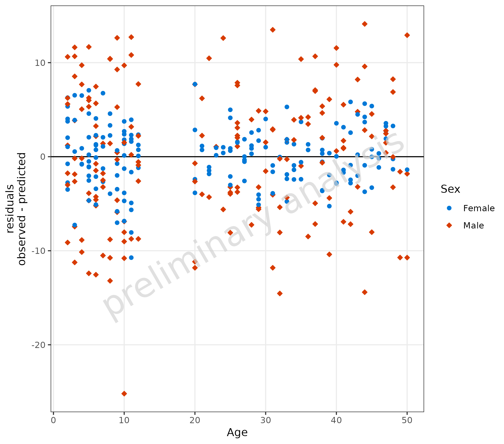
3.1.3 Map Residuals Directly
It is also possible to use already calculated residuals or formulas by using the aesthetic ‘y’.
plotResVsCov(
data = data,
mapping = aes(
x = Age,
y = Obs - Pred,
groupby = Sex
)
)
3.2 Adjusting Comparison Lines
plotResVsCov(
data = data,
mapping = aes(
x = Age,
predicted = Pred,
observed = Obs,
groupby = Sex
),
comparisonLineVector = list(zero = 0, "lower limit" = -0.25, "upper limit" = 0.25)
)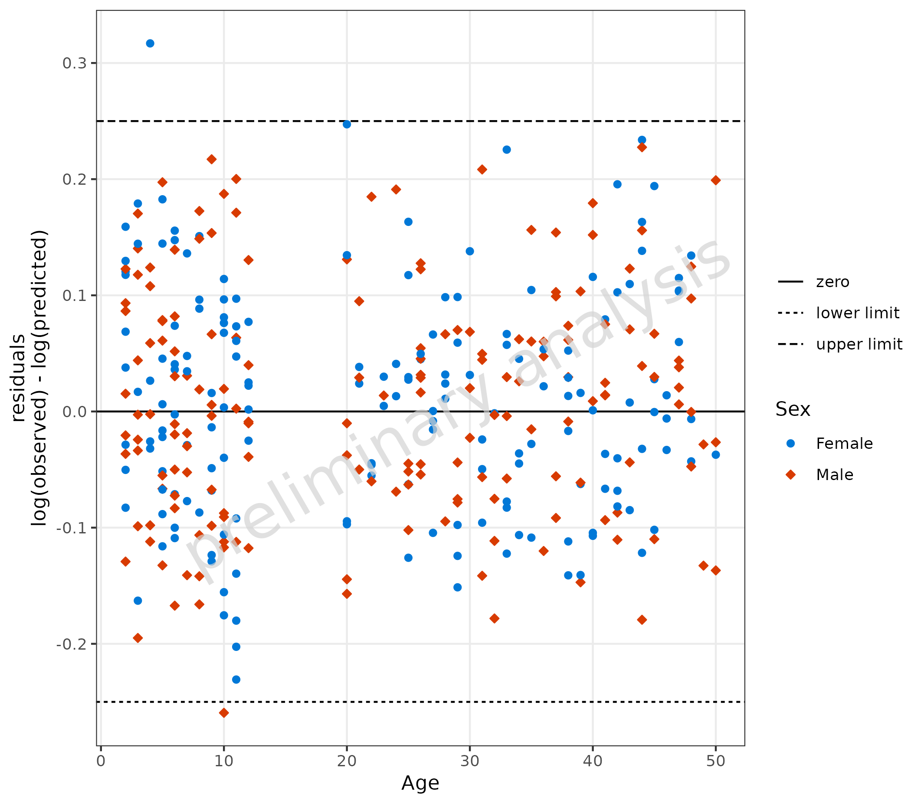
3.3 Adding a Regression Line
To add a regression line, set the input variable
addRegression to TRUE. For regression lines,
the package ggpubr has a nice function
stat_regline_equation to add statistics of the regression
as labels.
plotResVsCov(
data = data,
mapping = aes(
x = Age,
predicted = Pred,
observed = Obs,
groupby = Sex
),
addRegression = TRUE
) +
ggpubr::stat_regline_equation(aes(label = after_stat(eq.label)))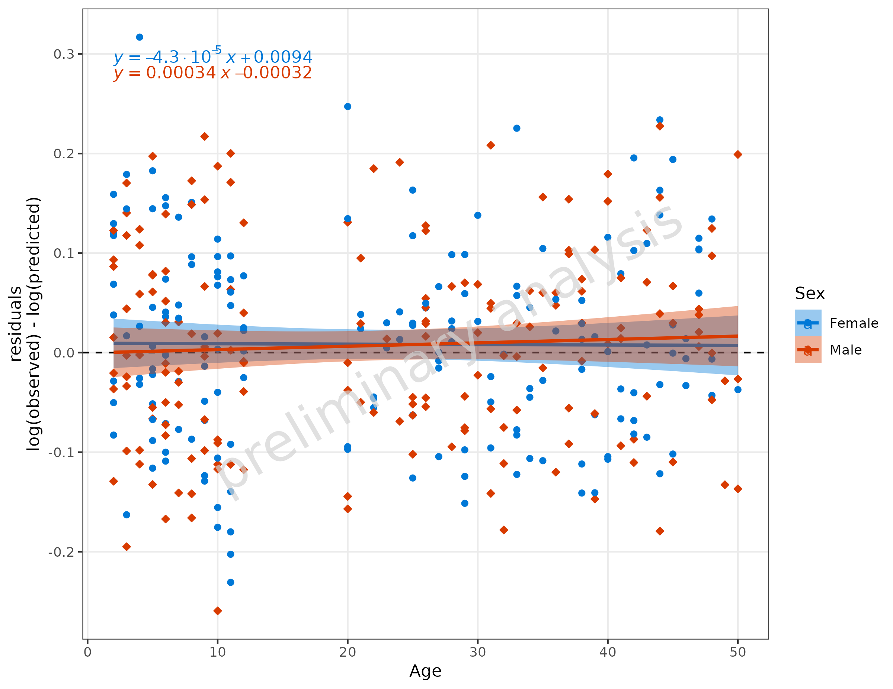
4. Ratio Plots (plotRatioVsCov())
4.1 Basic Examples
4.1.1 Default Settings
plotRatioVsCov() is used to evaluate ratios versus a
covariate. By default, the identity and 1.5 and 2 point lines are added,
and the default for yScale is ‘log’. The aesthetic
groupby can be used to group observations.
plotRatioVsCov(
data = pkRatioData,
mapping = aes(
x = Age,
y = Ratio,
groupby = Sex
),
metaData = metaData
)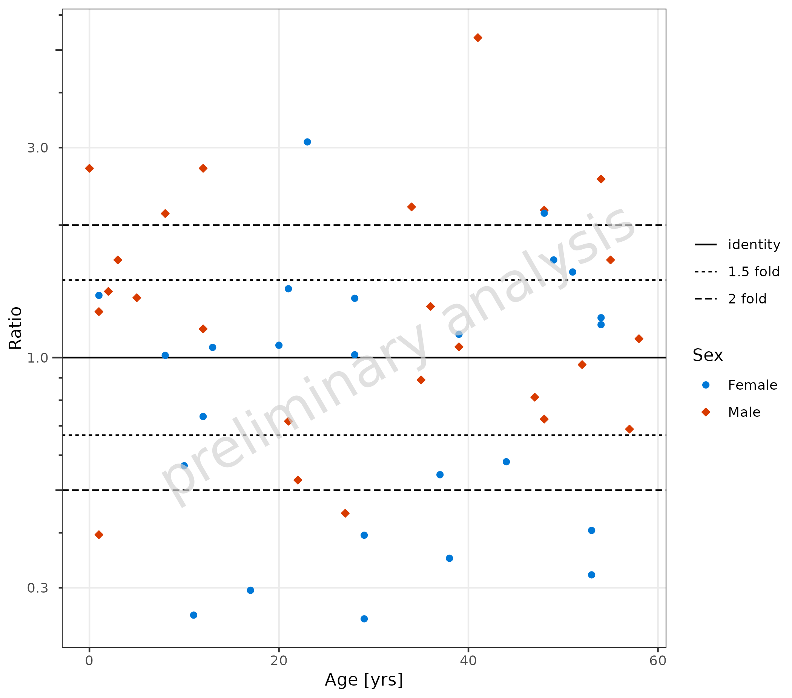
4.1.2 Compare Residuals as Ratio
Within the function plotRatioVsCov(), the variable
residualScale is fixed to “ratio”, and the ratio of the
residuals is calculated as $ observed / predicted $. Below, the
comparison line is set to a 1.2 fold distance.
plotRatioVsCov(
data = data,
mapping = aes(
x = Age,
predicted = Pred,
observed = Obs,
groupby = Sex
),
comparisonLineVector = getFoldDistanceList(c(1.2))
)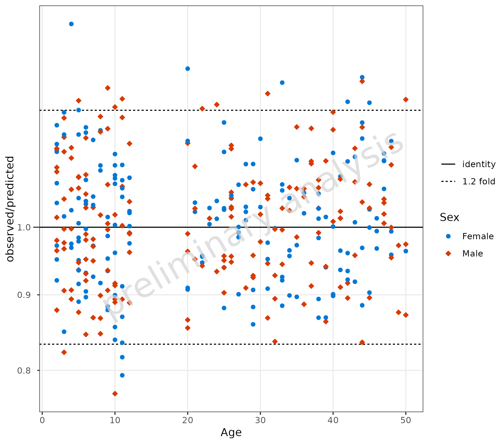
4.1.3 Using {ospsuite.plots} Specific Aesthetics like
MDV and error_relative
If some of the data should be omitted, we can do this by mapping a
logical column to the aesthetic mdv. Below, we exclude data
with Age less than 20.
Additional error bars are displayed by mapping the column “gsd” to
the aesthetic error_relative.
plotRatioVsCov(
data = pkRatioData,
mapping = aes(
x = Age,
y = Ratio,
error_relative = gsd,
mdv = Age < 20,
groupby = Sex
)
) + theme(legend.box = "horizontal", legend.title = element_blank())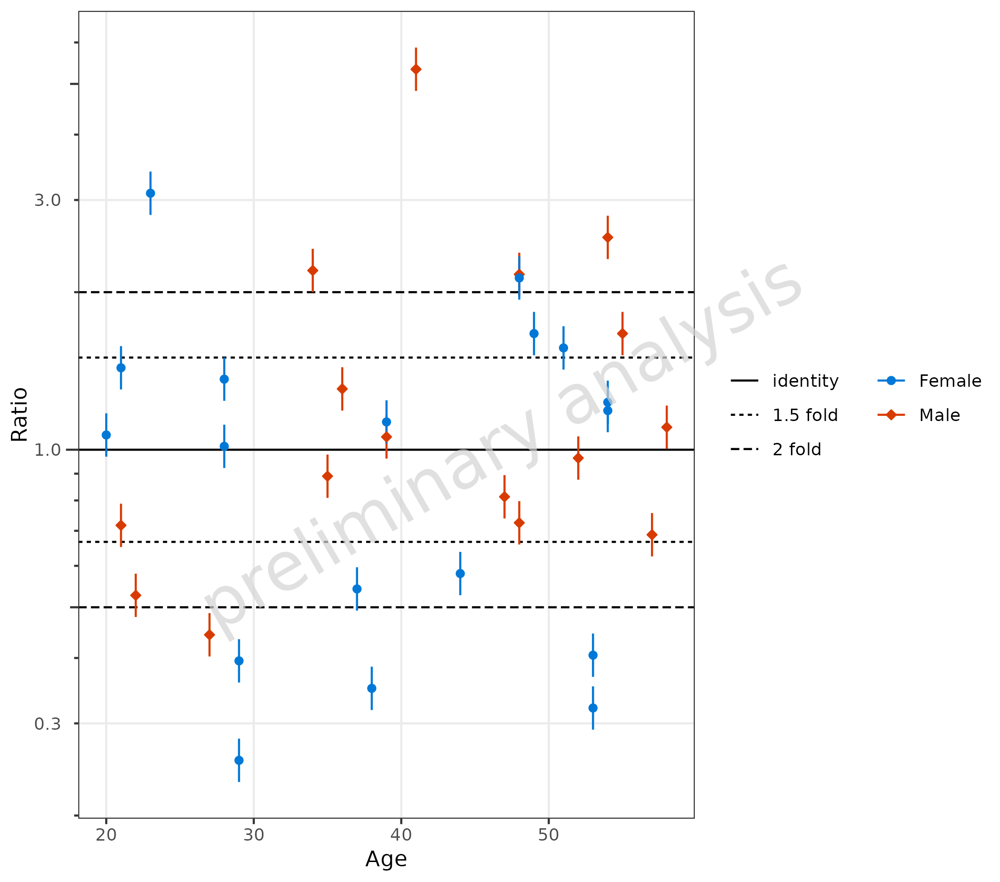
4.2 Qualification of Ratios
If the data.table package is installed and the
variable comparisonLineVector is a named list, the
{ggplot} object returned by plotRatioVsCov has
an additional entry countsWithin, which contains a
data.frame with the fractions within the specific ranges
given by the variable comparisonLineVector.
plotObject <- plotRatioVsCov(
data = pkRatioData,
mapping = aes(
x = Age,
y = Ratio,
groupby = Sex
),
metaData = metaData
)
plot(plotObject)
knitr::kable(plotObject$countsWithin, caption = "Counts and fraction within ranges")| group | Points total | 1.5 fold Number | 1.5 fold Fraction | 2 fold Number | 2 fold Fraction |
|---|---|---|---|---|---|
| all Groups | 50 | 24 | 0.48 | 32 | 0.64 |
| Female | 25 | 11 | 0.44 | 16 | 0.64 |
| Male | 25 | 13 | 0.52 | 16 | 0.64 |

4.3 Add Guest Criteria Lines
To compare DDI ratios, set the variable addGuestLimits
to TRUE and set the variable deltaGuest.
plotObject <- plotRatioVsCov(
data = dDIdata,
mapping = aes(
x = Obs,
predicted = Pred,
observed = Obs,
groupby = Study
),
metaData = dDImetaData,
addGuestLimits = TRUE,
comparisonLineVector = 1
)
print(plotObject)
knitr::kable(plotObject$countsWithin)| group | Points total | guest criteria Number | guest criteria Fraction |
|---|---|---|---|
| all Groups | 10 | 6 | 0.6 |
| Study 1 | 1 | 0 | 0.0 |
| Study 2 | 1 | 0 | 0.0 |
| Study 3 | 1 | 1 | 1.0 |
| Study 4 | 1 | 1 | 1.0 |
| Study 5 | 1 | 1 | 1.0 |
| Study 6 | 1 | 1 | 1.0 |
| Study 7 | 1 | 0 | 0.0 |
| Study 8 | 1 | 1 | 1.0 |
| Study 9 | 1 | 0 | 0.0 |
| Study 10 | 1 | 1 | 1.0 |
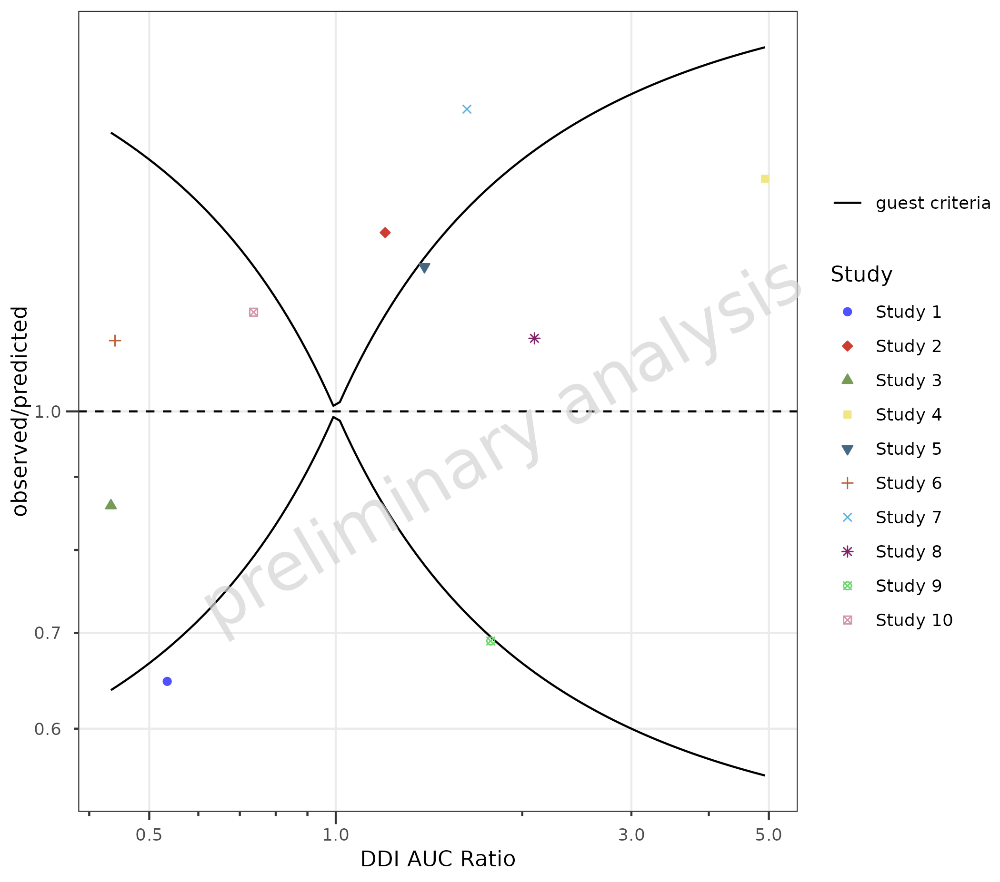
5. Quantile Plot (plotQQ())
plotQQ() produces a Quantile-Quantile plot. If using the
aesthetics predicted and observed, residuals
will be calculated according to the variable residualScale.
In the example below, the default value log is used.
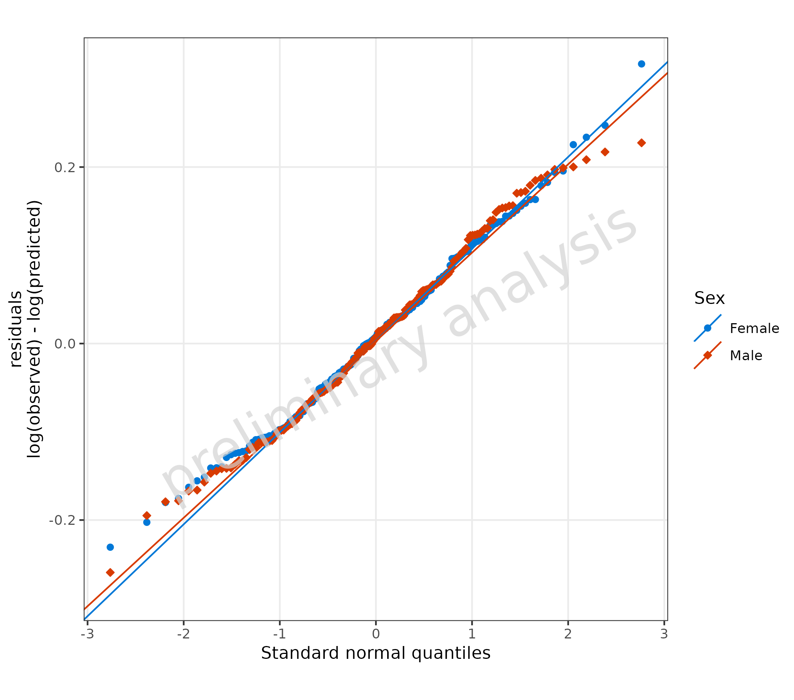
The aesthetic ‘sample’ columns with already calculated residuals or formulas can be mapped directly.
6 Usage of Aesthetics predicted and
observed in Other Functions
The aesthetics observed and predicted can
also be used in the functions plotHistogram() and
plotBoxWhisker(). The residuals will be calculated as
defined by the variable residualScale.
6.1 Residuals as Histogram
plotHistogram(
data = data,
metaData = metaData,
mapping = aes(
predicted = Pred,
observed = Obs,
groupby = Sex
),
residualScale = "log",
plotAsFrequency = TRUE,
distribution = "normal"
) + geom_vline(xintercept = 0, linetype = "dashed")6.2 Stratify Residuals with a Box-Whisker Plot
plotBoxWhisker(
mapping = aes(
predicted = Pred,
observed = Obs,
x = Sex
),
data = pkRatioData,
metaData = metaData,
residualScale = "linear"
)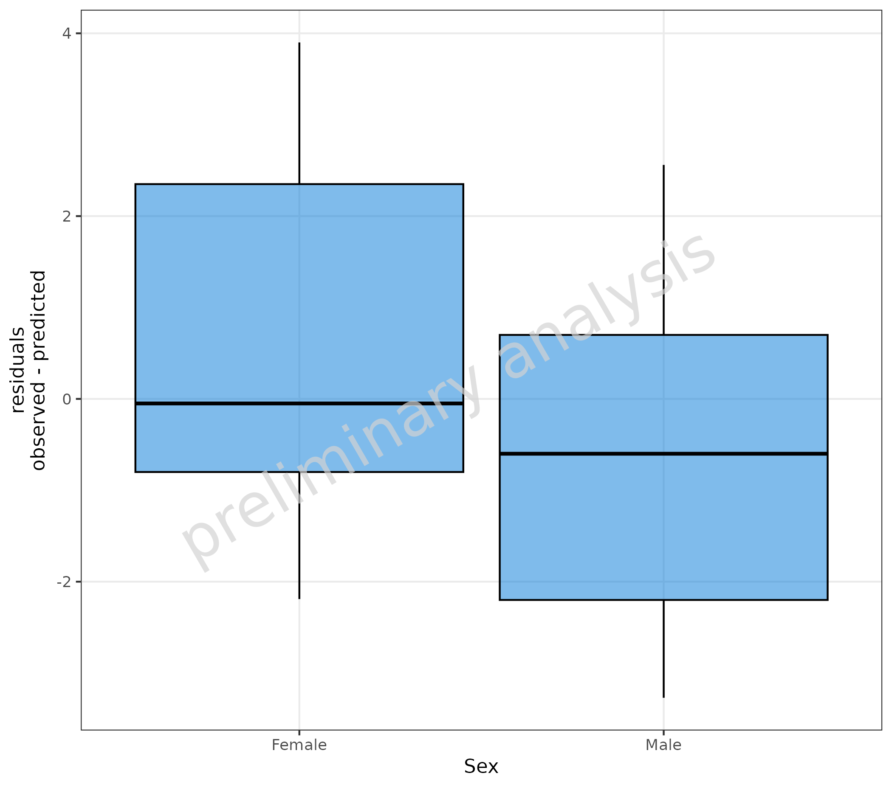